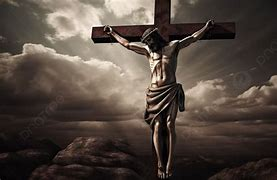

Evanghelia este vestea minunată că Dumnezeu, care a creat cerul și pământul, ne iubește pe fiecare dintre noi și ne-a făcut pentru a trăi în comuniune cu El. Din păcate, oamenii s-au îndepărtat de Dumnezeu prin păcat, iar această despărțire ne-a adus suferință și moarte spirituală. Pentru a ne aduce înapoi la El, Dumnezeu L-a trimis pe Fiul Său, Isus Hristos, care s-a născut ca om, a trăit o viață fără păcat și a arătat iubirea și mila Tatălui. Isus a murit pe cruce, luând asupra Sa pedeapsa pentru păcatele noastre, iar prin învierea Sa, El a biruit moartea și ne-a deschis calea spre viața veșnică. Prin credință în Isus, pocăință sinceră și urmarea Lui, fiecare om poate primi iertarea păcatelor și restaurarea relației cu Dumnezeu, primind astfel darul vieții veșnice.
Folosește bara de navigare pentru a explora detalii despre viața Lui sau pentru a ne contacta.